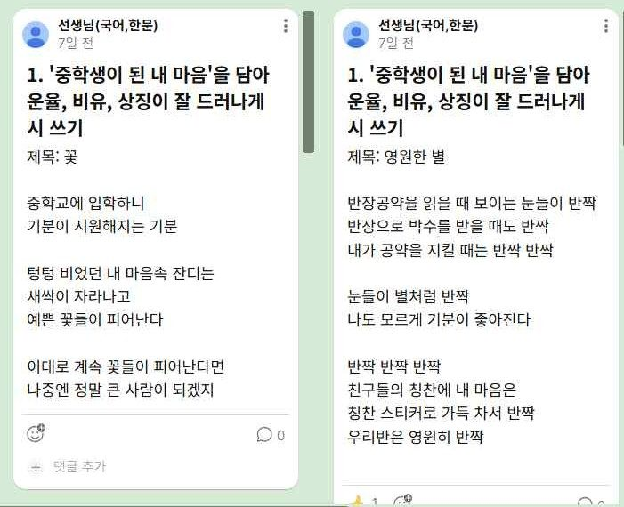
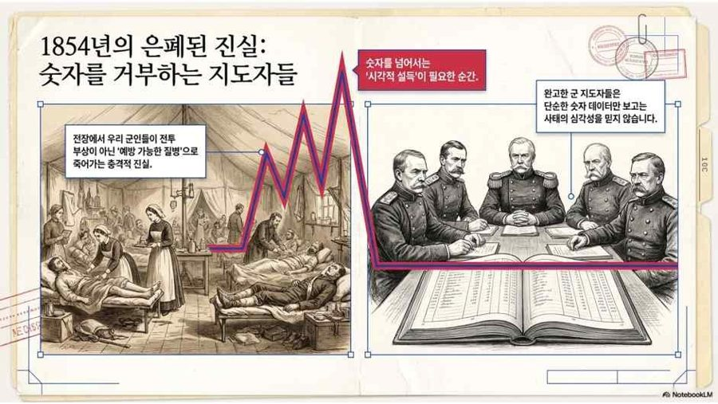
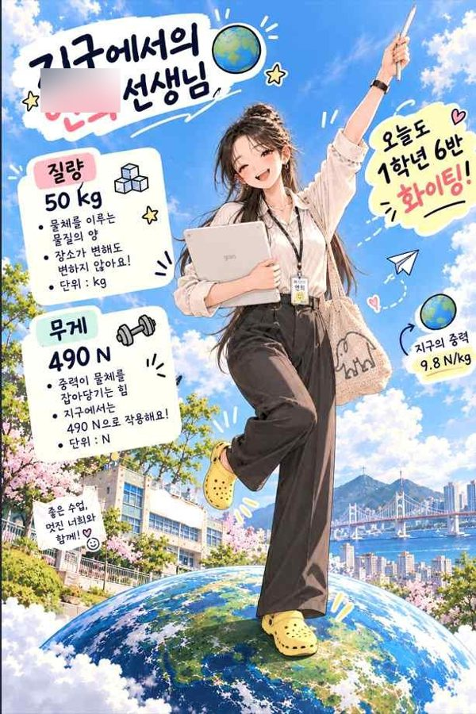
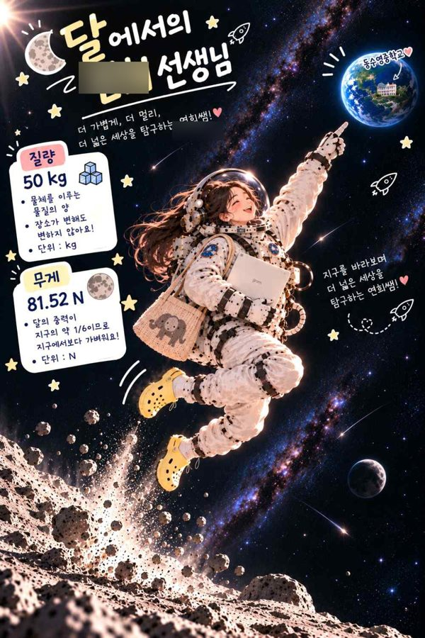
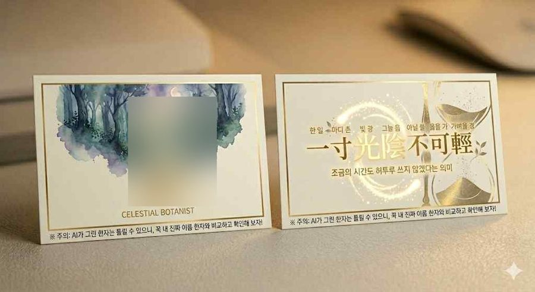

국어
AI로 점검한 시 고쳐 쓰기
AI를 통해 창작한 시를 점검하고, 점검 결과를 비판적으로 수용하기
- Q내 시에 운율·비유·상징이 잘 드러났을까?
- HAI의 제안 중 받아들일 것과 거절할 것 고르기
- C고쳐 쓴 시를 패들렛에 올려 공유하기

과정안 보기PDF · 9쪽 · 0.9MB
동수영중학교 연구학교 · QHC 수업모형 · 질문하는 학생, 함께 생각하는 AI
질문을 먼저 만들고, AI의 답을 근거와 맞춰 보고, 자신의 판단을 담아 산출물을 만듭니다.
학생 궁금한 점을 탐구할 수 있는 질문으로 다듬는다
AI 쓰지 않거나, 학생의 질문을 되묻기만 한다
학생 AI의 답을 교과서·동료·교사의 기준과 비교해 받아들이거나 고치거나 버린다
AI 교사가 설계한 가드레일 안에서 자료·반론·피드백
학생 자신의 판단이 담긴 산출물을 만들고 나눈다
AI 이미지·코드 변환 같은 표현 보조로만
12개 교과 21명의 교사가 한 해 동안 QHC 수업을 운영했습니다.
학생 서술형 응답 · AI를 쓰는 새로운 방법과 AI의 한계를 함께 알아차렸어요
학생용 AI가 '답'이 아니라 '생각'을 돕도록 교사가 프롬프트에 넣은 장치입니다.
교과를 골라 보세요. 각 수업의 과정안을 PDF로 볼 수 있습니다.
AI를 통해 창작한 시를 점검하고, 점검 결과를 비판적으로 수용하기

논증의 신뢰성, 타당성, 공정성 판단하기
Nightingale’s Secret Briefing Project · 설득 포스터와 영어 슬로건

세계의 독특한 규칙을 조사해 모둠 발표하기
AI 튜터의 피드백으로 학교 이야기를 영어 글로 완성하기
우리 지역의 인구 구조와 인구 문제를 탐색하고 탐구 질문 만들기
문화의 속성을 적용해 외국인 친구의 질문에 답하기
AI 역사 탐정 조수에게 묻고, 교과서로 검증하기
AI 역사 인물 인터뷰와 모둠 퍼즐
AI·디지털 포스터로 탐구하는 중력


이름 한자의 뜻을 확인하고 명구를 담은 명함 만들기

AI 자세 인식 앱으로 운동 기록을 스스로 관리하기
체육대회 때 착용할 엠블럼과 유니폼을 협동해 제작하기
AI 앱을 활용해 모둠별 기초체력 훈련 프로그램 설계하기
선택구조로 만든 코드를 AI로 웹앱으로 바꿔 보기
생활 속 불편을 찾아 AI 발명 코치와 아이디어 다듬기
판소리 구성요소를 익혀 직접 참여하기
AI의 답변을 비판적으로 검토하며 관심 직업 탐색하기